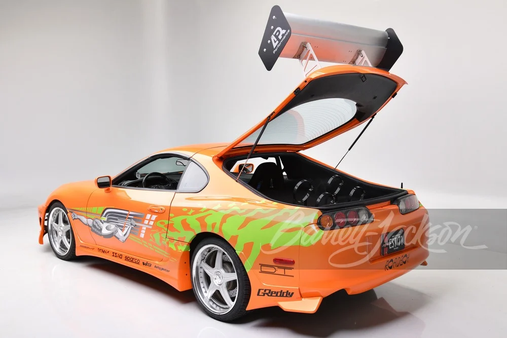
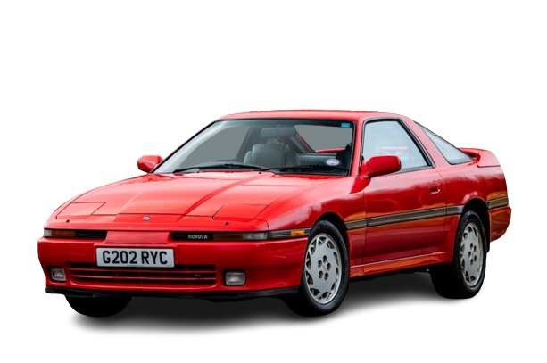

Descrição: câmbio manual e a edição especial na linha 2023, a Toyota afirma que o esportivo traz mais mudanças dinâmicas, como suspensão e direção recalibradas.
bem como o modo Track para facilitar os drifts. No mais, há agora uma função chamada Hairpin+, que permite as rodas patinarem mais durante o contorno de curvas em descida, deixando o motorista curtir mais o esportivo em estradas sinuosas. Descrição: Um dos Toyota Supra 1993 dirigidos por Paul Walker no primeiro
filme da saga Velozes & Furiosos, em 2001. Descrição: Um esportivo de grande porte, que alcançava velocidade final real de 209 km/h.
Com aceleração de 0 a 100 em 6,8 segundos, com faróis escamoteáveis, teto targa, e uma série de equipamentos, digno de um produto Toyota de primeira linha.